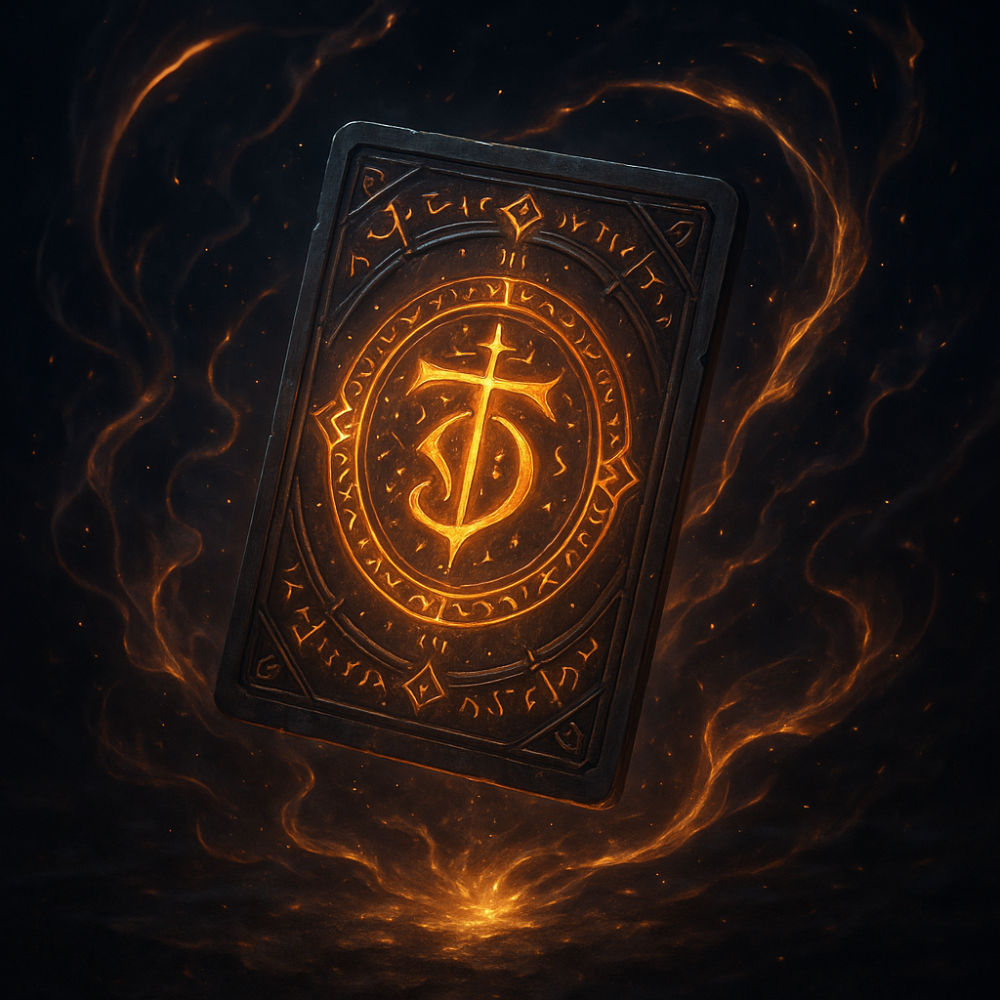
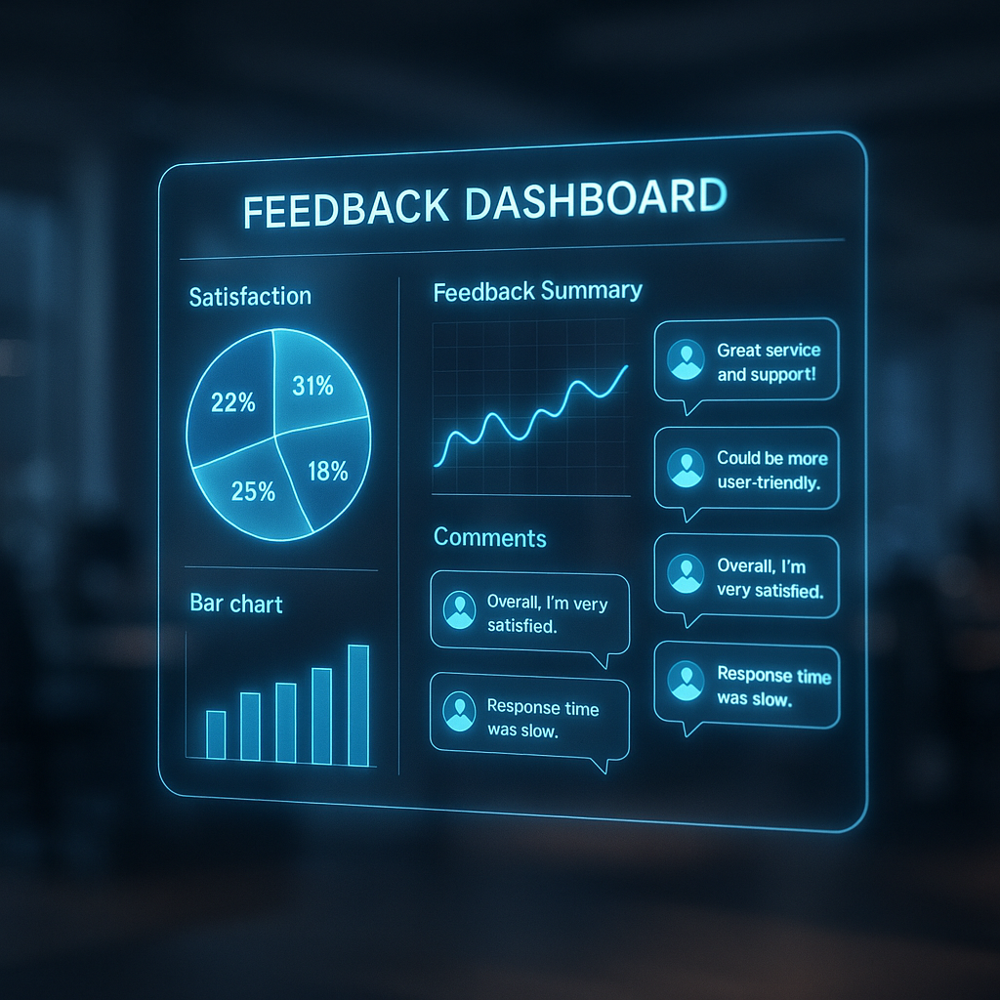
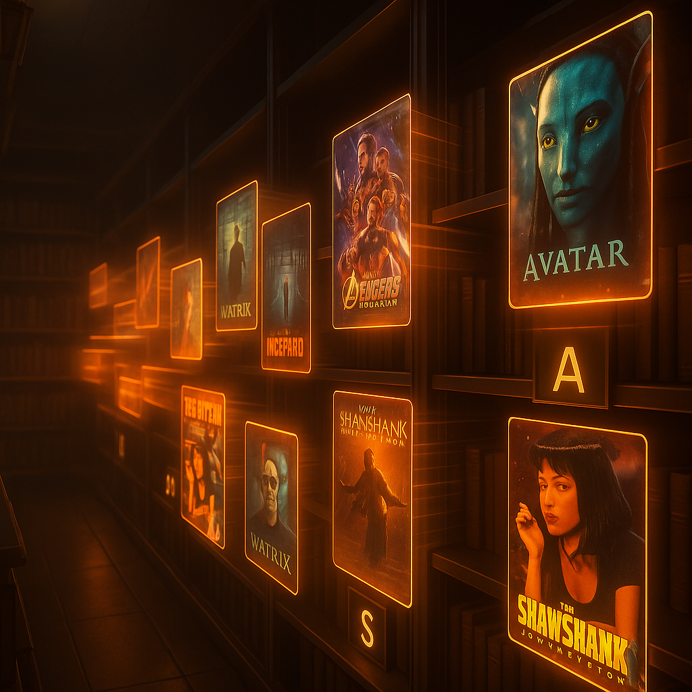
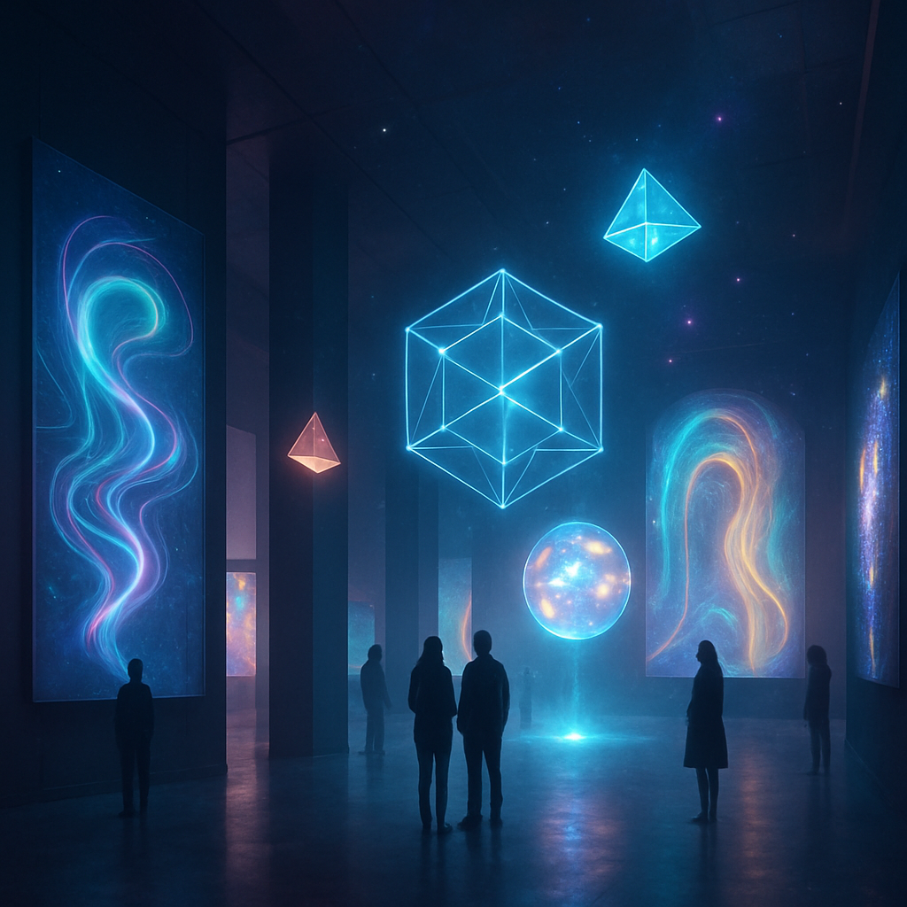

Program Objectives
- Develop, analyze and integrate artificial intelligence applications and IoT systems.
- Design and create natural language processing systems (NLP).
- Design and create machine learning systems using best practices and patterns.
- Innovate in deep learning by consuming big data with original algorithms.
- Demonstrate software development skills using multiple languages, environments, platforms, and source control.
- Describe, develop, analyze, and integrate data structures, databases, and database management systems.
(Each objective is supported by projects in the Projects tab.)
Projects & Artifacts

Mystic Card Forge
Interactive MTG card maker with AI design & community voting.
View Project
FeedbackLens Mini
AI-driven tool for analyzing feedback and improving projects.
View Project
Movie Sorter
Web app that lets users enter movie titles and sort them alphabetically.
View Project
Abstract Illusion Museum
Virtual museum of AI-generated abstract illusions.
View Project